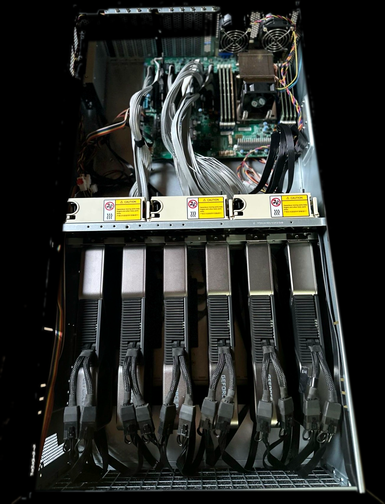

Performance per dollar
About 2x the throughput per dollar of cloud GPU instances.
Nucore designs the compute infrastructure and the software that runs on it. One integrated system for training, inference, multi-agent workloads, data security, and data labeling, deployed on your own infrastructure.
COMPUTE INFRASTRUCTURE
Spartan is our flagship compute infrastructure unit, engineered specifically for agentic AI workloads. Built on NVIDIA architecture and modified by Nucore, it delivers about twice the compute throughput per dollar of equivalent cloud GPU provisioning, with memory and orchestration tuned for long-running reasoning loops and multi-agent systems. It is in market today with a working deployment and validated performance.

In productionLLM INFRASTRUCTURE
Kronos is compute infrastructure purpose-built for large language models. It runs powerful LLMs entirely on local infrastructure, enabling cross-team and cross-organization collaboration on shared models without sending a single byte to a third-party cloud. Your weights, your data, and your fine-tunes stay inside your walls.
AGENTIC SECURITY PLATFORM
Nucore Cloak is an agentic AI platform that sits between your teams and every AI outlet they use. Acting as a trusted third party to each tool in the company, Cloak inspects and intercepts prompts and responses in real time, redacting sensitive data before it can ever leave the organization. Nothing reaches an external model without passing through the cloak.
DATA ENGINE
Helios is our data engine. It ingests raw, unstructured data and automatically labels and annotates it at scale, producing the high-quality, human-validated training datasets that feed the growth of large language models. Helios turns the data you already have into fuel for the models you want to build.
About 2x the throughput per dollar of cloud GPU instances.
We build the hardware and the software from one architecture, so the software runs faster than anything retrofitted onto commodity GPUs.
Tuned for memory persistence, reasoning loops, and multi-agent orchestration.
Deploy on-premise with full data sovereignty and a defined four-year lifecycle.